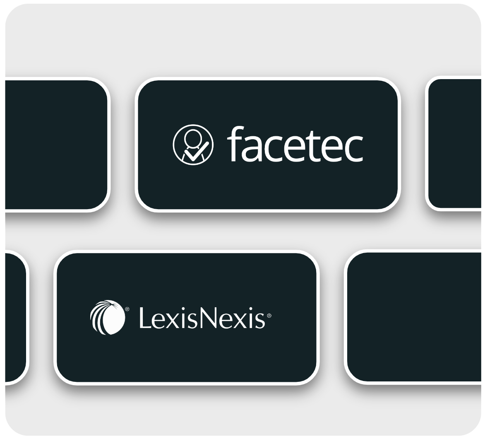
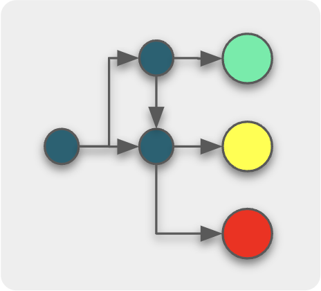
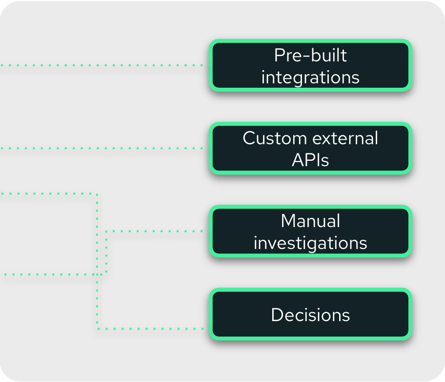
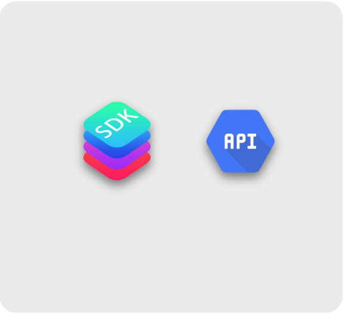

Create any verification flow for KYC, onboarding, and credit decisioning with drag and drop verification blocks and routing logic operators. No need to depend on development teams to implement changes.
Use our extensive catalog of proprietary and partner verifications to include as a decisioning factor in any onboarding or underwriting flow.
Include biometric verifications, sanctions screening, official database lookups, anti-spoofing detection and more.
Onboard individuals as well as businesses and other legal entities.

Avoid hard-coding complex business logic or relying on manual revisions. Implement that logic into our friendly UI to automate more decisions.
Use our decisioning orchestrator to streamline operations for different teams in your company.
Credit decisions can be made using our pre-built models or implement your custom models right within the platform.

Decisions don't stay within the platform — they can trigger actions on external systems or within the rest of Backbone's ecosystem.
Trigger out-of-the-box actions such as reporting the user, sending a welcome email or requesting an enhanced due diligence process.
Setup custom HTTP requests and establish business logic to handle the response.

Start onboarding customers instantly without writing a single piece of code. Use our onboarding portal or customize the experience with our SDK or API integration.
Get access to a custom link to a portal with custom branding or use our promoter portal for in-store onboardings.
Full programmatic control with the same underlying engine and workflow tools powering every integration option.
